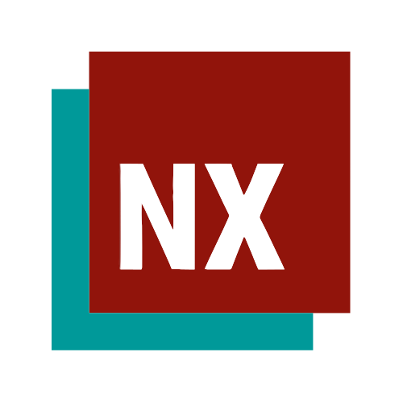
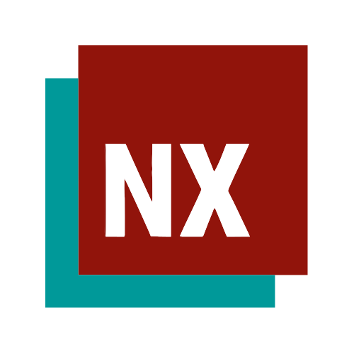

Skills
Preliminary
Beiginner
Intermediate
Proficient
 



- Introduction to Astrophysics
- Physics: Quantum
- Physics: Thermal
- Seminar in Astronomy
- Aerospace Dynamical Systems
- Compressible Flow
- Minds and Machines
- Aerospace Control Systems
- In-Compressible Flow
- Mechanics of Aerospace Structures
- Aerospace Flight Mechanics
- Thermo-Dynamics
- Differential Equations
- Engineering Materials
- Physics: Electricity & Magnetism
- Calculus III
- Intro Computing: Engineering
- Physics: Mechanics
- CAD
- Calculus II
- Intro to Aerospace Engineering
- General Chemistry
- Calculus I
About Me
My journey as a first-generation scholar has been marked by an unwavering dedication to my academic pursuits.
I have always possessed an innate aptitude for theory, which I have nurtured and expanded upon throughout my educational journey.
From my early years at the Illinois Mathematics and Science Academy to my rigorous studies in Aerospace Engineering and Astronomy
during my undergraduate years, I have been driven by a deep passion for learning and a relentless pursuit of knowledge.
My mechanical intuition, which has its roots in my childhood experiences watching my father work on cars,
has been an invaluable asset in my academic and personal life. It has enabled me to approach problems with a unique perspective,
often leading to innovative solutions and creative thinking. This hands-on approach to problem-solving has shaped my identity as a
scholar who is not afraid to get their hands dirty and tinker with concepts until they gain a profound understanding.
In addition to my academic pursuits, I am also deeply involved in various extracurricular activities that align with my passions
and values. My role as the Membership Director on the board of Minorities in Aerospace at the University of Illinois
Urbana-Champaign allows me to make a meaningful impact in promoting diversity and inclusion within the aerospace industry.
My commitment to learning, my passion for problem-solving, and my dedication to making a positive impact in my community are
all facets of who I am as a passionate contributor and future engineer.
Beyond my academic and professional interests, I have a rich and fulfilling personal life. Playing competitive Overwatch with my
girlfriend in the top 10% brings both enjoyment and a sense of teamwork. We make the competition a shared experience that
strengthens our relationship and communication. I also find great meaning in listening to music, working out to maintain a
healthy body and mind, and experimenting in the kitchen. I love everything cinematic Marvel and have found so much value in
analyzing TV and film.
SKILLS
I have strong capabilities in python programming and Siemens NX computer aided design, specifically, which is utilized in many of my completed projects. I also have experience in MATLAB, Command Language, SolidWorks, and some simulation software open sourced for basic inquiry. I love utilizing code and linear algebra to obtain extremely useful techniques. For example, my favorite project was coding a Linear Quadratic Regulator state feedback controller for a single-axled dynamical chassis system. Another of my most validating experiences is my materials lab for Applied Aerospace Structures where I tested uniaxial stress and strain. The piece of the sample I kept, highlighting the difference in stress between the outer and inner material gradients, serves as a tangible reminder of my commitment to deep understanding and exploration.
Utilizing world-class institutions at UIUC has not only enriched my education, but has also given me the opportunity to develop professionally and socially. My Astronomy Research Seminar serves as the cornerstone of my initiative towards meaningful development. I have completed technical writing classes as well as excelled in my electives, which I have often chosen as 400 level courses to my professors’ surprise. I am constantly striving to extract significance from my surroundings and often find that critical thinking is a vital skill developed by comparison or recognition.
LEADERSHIP
An incredible achievement of mine is my involvement with Minorities in Aerospace, which I helped found with a few close friends. Together, we transformed MAERO from an isolated club into a Registered Student Organization (RSO), and we were successful in securing sponsorship and mentorship from Blue Origin. Under this umbrella, I have worked on passion projects like Hummingbird, Ascension, and Flight, all with the ambitious goal of reaching fruition by the fourth quarter 2023/2024 academic year. My specific contributions include ArduPilot and Navio HAT autopilot calibration for control systems design of Raspberry Pi-powered flight. Additionally, I collaborated on an outreach program involving a flapping robot design project with testing at the University’s wind tunnel and led another, emphasizing the importance of linear algebra and application of control in engineering. Communication, teamwork, and networking are crucial, honed skills for success, but the holistic belief is in redefining ability and realizing the individual.
WHAT I'M DOING NOW
I am working towards research in Astronomical simulation under the Astronomy Research Apprenticeship Program and am working on personal projects related to Geometric Dimensioning and Tolerancing as well as Tool Command Language and Ladder Logic as I am interested in the increasing autonomous industrial engineering applications in my hometown of Rochelle, Il. I am always tinkering with simulation software related to automation, robotics, and aerospace, currently Gazebo and ArduPilot SITL for example. I was also accepted to and attended the 2023 Quantum Science at Purdue workshop because of my interest in instrumentation and physics, fields exemplified by places like FermiLab. This is a dream come true, especially considering I was able to attend the nuclear astrophysics winter intersession in 2017.